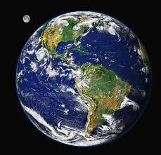

A few facts about the world we live in
Earth is the third planet from the Sun and the only astronomical object known to harbor life. About 29.2% of Earth's surface is land consisting of continents and islands. The remaining 70.8% is covered with water, mostly by oceans, seas, gulfs, and other salt-water bodies, but also by lakes, rivers, and other fresh water, which together constitute the hydrosphere. Much of Earth's polar regions are covered in ice. Earth's outer layer is divided into several rigid tectonic plates that migrate across the surface over many millions of years, while its interior remains active with a solid iron inner core, a liquid outer core that generates Earth's magnetic field, and a convective mantle that drives plate tectonics.
| Name | Radius | Temperature |
|---|---|---|
| Mars | 3,390km | -55°c |
| Venus | 6,052km | 460°c |
Want to know more?